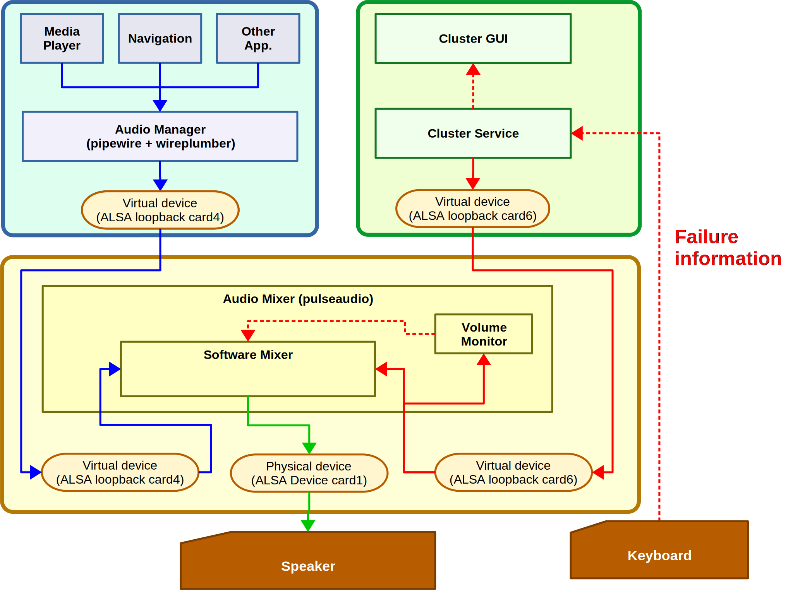

If critical failure occurs in the vehicle, the instrument cluster notify to driver using alarm sound and telltale.
When IVI is playing audio sound, that must be mute in this case.
This demo has system wide audio mixer. It's realize audio sound mute that is controlled by alarm sound volume monitor.
The volume monitor is monitoring alarm sound stream. When that detect alarm sound playing, that mute audio sound.
